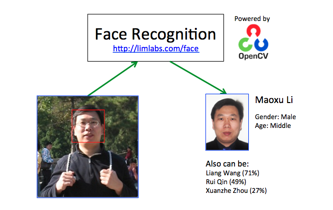

Face Detection
Some effective and accurate Face Detection algorithms are realized in OpenCV. This program demonstrated the utilization of a HAAR cascade classifier to determine the locations and sizes of faces in a digital image. Each detected face is marked with a rectangular box and saved as a separate image file. You may find a copy of the source code at Github. Face Detection technology can be used in photo management or video surveillance system.

Face Recognition
Face Recognition is used to automatically identify a person in a digital image and determine the person’s main characteristics, such as age and gender. Some comprehensive Face Recognition algorithms are realized in OpenCV, such as Eigenfaces, Fisherfaces, and Local Binary Patterns Histograms (LBPH). Face Recognition technology can be used in photo management or video surveillance system.
